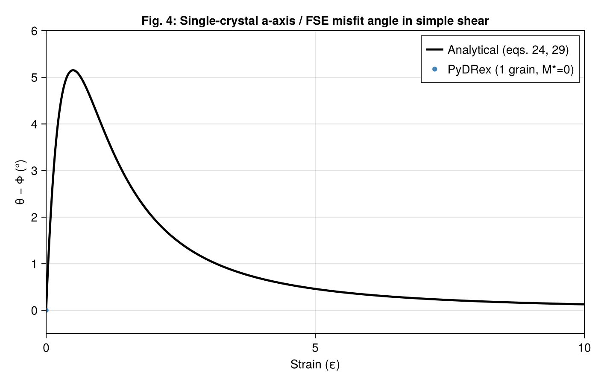
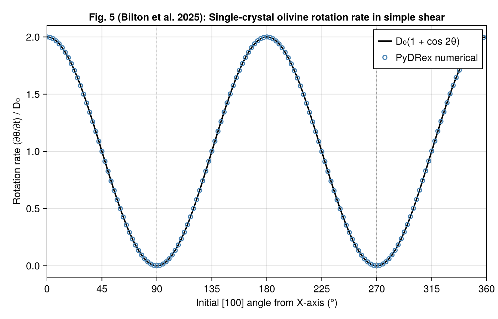
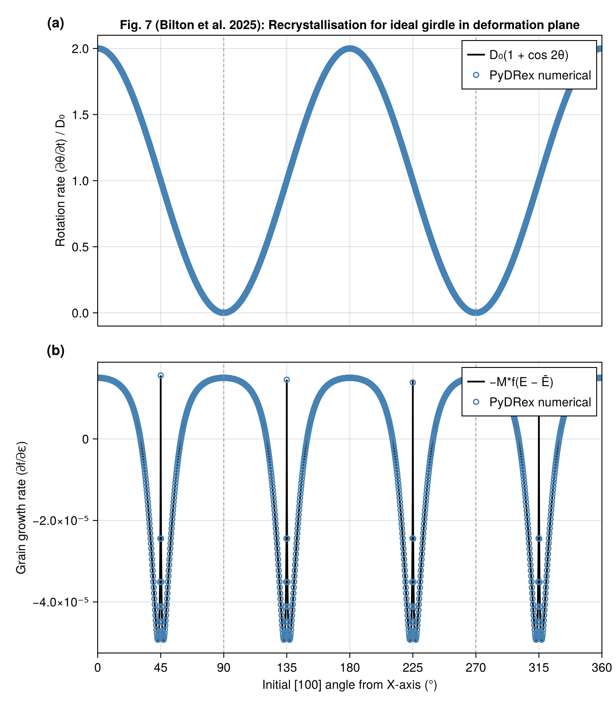
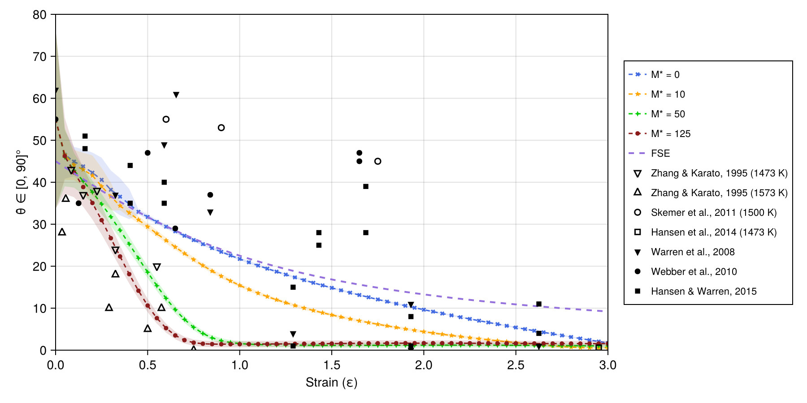
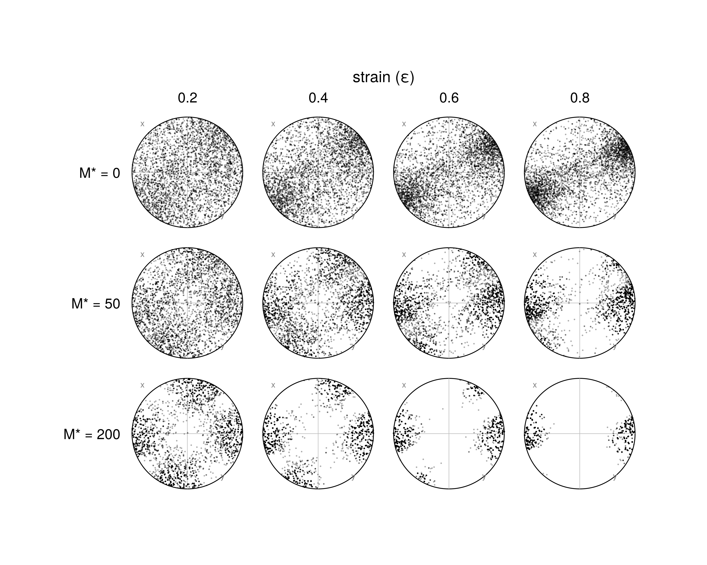
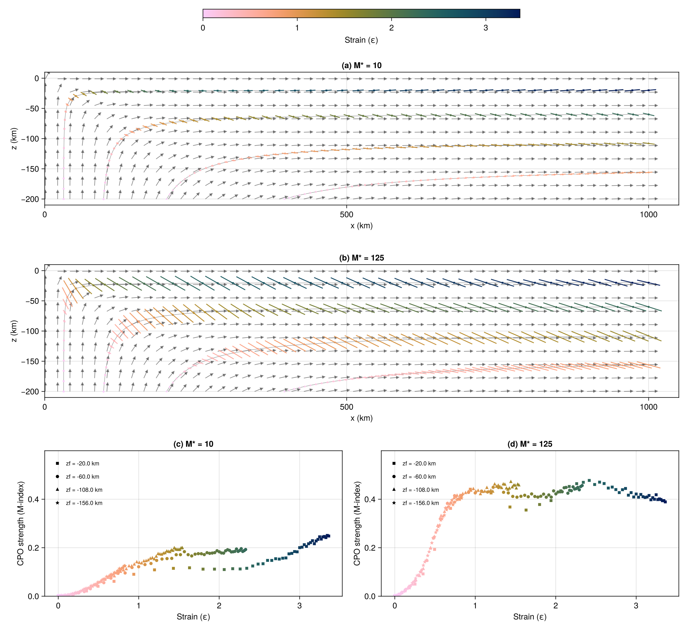

Examples
All example scripts live in examples/standalone/ and reproduce figures from Bilton et al. (2025). They require CairoMakie for plotting, which is available through the bundled project environment:
cd examples/standalone
julia --project=. -t auto <script>.jlThe -t auto flag activates all available CPU cores.
Figure 4 — Single-crystal a-axis / FSE misfit (fig4_simple_shear_lag.jl)
Theoretical and numerical misfit between the olivine [100] a-axis angle θ and the finite strain ellipsoid (FSE) long-axis angle Φ in simple shear, as a function of accumulated strain ε.
Demonstrates:
- Analytical predictions (eqs. 24 and 29 of the paper) vs. DRex with 1 grain and M*=0
- Use of
finite_strainandsmallest_angle

Figure 5 — Single-crystal rotation rates (fig5_rotation_rates.jl)
Numerical rotation rates for a single A-type olivine crystal in simple shear, as a function of the initial [100] angle from the shear direction. Compared to the theoretical relationship (eq. 23 of the paper).
Demonstrates:
- Single-grain simulations with fixed initial orientation

Figure 7 — Polycrystal rotation and growth rates (fig7_recrystallisation.jl)
Rotation rates (a) and grain growth rates (b) for an A-type olivine polycrystal with an ideal girdle texture in the X–Y plane, deforming in simple shear.
Demonstrates:
- Use of
derivatives!directly on a polycrystal

Figure 8 — Effect of M* on CPO direction in simple shear (fig8_simple_shear_GBM.jl)
CPO direction (from the hexagonal symmetry axis of the Voigt-averaged elastic tensor) vs. accumulated strain, for several values of the grain boundary mobility M*. Ensemble of multiple random seeds; mean ± 1 std. dev. plotted.
Demonstrates:
- Effect of
gbm_mobilityon CPO evolution voigt_averagesandelasticity_components

Figure 9 — [100] pole figures (fig9_pole_figures.jl)
[100] pole figures (Lambert equal-area projections) for A-type olivine in simple shear at four strain values and three M* values (0, 50, 200).
Demonstrates:

Figure 10 — Corner flow CPO (cornerflow_simple.jl)
CPO evolution along four pathlines in an analytical 2D corner flow, for M*=10 and M*=125 (Fig. 10 of the paper). Panels show Bingham-average fast axis directions (scaled by M-index) and M-index vs. strain curves.
Reproduces the main benchmark figure used to validate the Julia implementation.
julia --project=. -t auto cornerflow_simple.jl # CPU, Float64 + Float32
julia --project=. cornerflow_simple.jl --metal # Metal GPU (Apple Silicon)
julia --project=. -t auto cornerflow_simple.jl --batch # CPU batch integrator
LaMEM 3D subduction (examples/LaMEM/)
Post-processes CPO from a full 3D LaMEM subduction simulation. See LaMEM Integration for details.